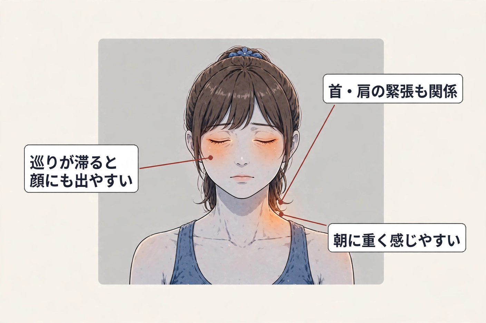

顔のむくみ・たるみ
美容整体ステラ・ポラリス東三国｜大阪市淀川区東三国・東三国駅徒歩5分・女性向け

ドライヘッドスパ×美容整体。頭蓋骨から引き上げるケア
朝起きたときの顔のむくみは、水分や老廃物の巡りが滞ることで起こりやすいと言われています。塩分の多い食事や睡眠不足、冷えなどが重なると、顔全体が重たく、ぼんやりした印象になりがちです。また、頭皮の硬さや表情筋のこわばりも、フェイスラインのもたつき感と関係します。年齢とともに変化する肌のハリ感とあわせて、顔まわり全体のケアを望まれる方が多いお悩みです。このページでは、顔のむくみ・たるみの背景にある仕組みと、顔まわりが軽くすっきり見える状態を目指す当サロンでのケア、ご自宅でできるセルフケアをご案内します。まずは下のチェックで、ご自身の状態を確かめてみてください。
ご予約はこちら（Coubic）こんなお悩みありませんか
- 朝起きると顔がむくんで、目が開きにくい
- 夕方になると、フェイスラインがもたついて見える
- 頭皮が硬く、指で動かしにくい感じがする
- 塩分の多い食事の翌日は、顔の重さがとくに気になる
- 年齢とともに、頬の位置が下がってきた気がする
- 大切な予定の前に、顔をすっきり見せたいと思う
- 首や肩のコリと一緒に、顔まで重く感じることがある
当てはまる項目が多いほど、顔まわりの巡りの滞りや頭皮の硬さが、むくみ・たるみの印象に関係している目安とされています。顔は体の中でも巡りの変化が表れやすい場所です。次のセルフチェックで、今の頭皮と顔の状態の傾向を確かめてみましょう。
簡単セルフチェック（頭皮の動きチェック）
指の感覚でできる、頭皮の状態の傾向を知るための簡単な方法です。
- 両手の指の腹を頭皮に当て、頭頂部・側頭部・後頭部をそれぞれ小さく円を描くように動かします。
- 頭皮が頭蓋骨の上で滑るように動くか、部位によって動きに差がないかを確認します。
- 動きにくい部位がある、頭皮が張った感じがする場合は、頭皮のこわばりが顔のむくみ感にも関係している目安と言われています。
※これは診断ではありません。ご自身の状態の傾向を知る目安としてお使いください。
顔のむくみ・たるみの原因と仕組み
水分と巡りの滞り
顔のむくみは、余分な水分や老廃物が巡りきらずに滞ることで起こりやすいと言われています。寝ている間は体を動かさないため、朝はとくに顔に水分が集まりやすく、目元や頬が重く見えがちです。塩分の多い食事や水分バランスの乱れ、冷えなどが重なると、巡りはさらに滞りやすくなります。図1のように、顔のむくみは顔だけでなく、出口となる首やデコルテの巡りともつながっています。

図1 顔のむくみで起こりやすい変化と、顔まわりがすっきりした状態のイメージ。顔の状態には個人差があります。
頭皮の硬さと表情筋のこわばり
頭皮と顔の皮膚は一枚でつながっています。頭皮が硬くこわばると、顔の皮膚を引き上げる力も働きにくくなり、フェイスラインのもたつき感につながることがあります。また、表情筋は使わない部分ほどこわばりやすく、巡りの滞りとあわせて、顔全体が下がって見える印象の背景になると考えられています。頭まわりをほぐすことは、顔の印象を考えるうえでも大切なポイントです。
首・デコルテとのつながり
顔から流れていく巡りの出口は、首や鎖骨まわりにあります。首や肩が緊張して巡りが滞ると、顔のむくみも抜けにくくなると言われています。顔だけをケアしても戻りやすいと感じる方は、この出口の詰まりが関係している場合があります。顔・頭・首・デコルテを一続きでケアすることが、すっきり感への近道になります。
生活習慣との関わり
塩分の多い食事、睡眠不足、お酒、冷え、長時間のうつむき姿勢――こうした生活習慣の積み重ねは、顔のむくみ・たるみの印象を強めやすい要素です。年齢とともに肌のハリ感が変化していく中でも、日々の習慣と巡りのケアを見直すことで、顔まわりが軽く、すっきり見える状態は目指していけます。大切な予定の前のケアだけでなく、日常の積み重ねとして取り入れる方が増えています。
セルフケアで足りる場合・サロンケアが向く場合
むくみが軽く、朝のマッサージや温めケアで日中にはすっきりする日が多い場合は、まずご自宅でのセルフケアを続けて様子を見る方法があります。一方で、頭皮の硬さが自分ではほぐしにくい、顔から首まで一続きで流したい、大切な予定に向けて顔の印象を整えたいという場合は、サロンでのケアが向いている目安になります。サロンでは、頭まわりから顔、首、デコルテまでつなげてケアすることで、施術後に「顔が軽くなった」「目元がぱっちりした」と感じやすい状態を目指します。どちらが正解というものではなく、今の状態に合わせて選ぶことが大切です。
当サロンでのケア
当サロンの顔のむくみ・たるみケアは、「頭から引き上げるように、顔まわりの巡りを整える」ことを目指す組み立てです。頭・顔・首・デコルテを一続きで捉え、部位と目的に合わせて3つの手技を組み合わせます。
ドライヘッドスパ：頭まわりを中心に、頭皮を丁寧にほぐす手技です。頭皮のこわばりをゆるめ、顔を引き上げる土台を整えることを目的に進めます。
美容整体：顔まわりは引き上げるようなイメージでケアし、あわせて首のラインと頭の位置を整えます。顔全体のバランス感を整えることを目的に進めます。
アロマオイルマッサージ：首やデコルテまでつなげて流すようにケアし、顔だけに留まらない全体の巡りを意識した施術を心がけます。香りに包まれるリラックス感の高いケアです。
ケアを通して目指すのは、こんな変化です。
- 顔まわりが軽くなり、朝のむくみ感が気になりにくい印象へ
- 目元がぱっちりしたような、すっきりした感覚へ
- フェイスラインがすっきり見える印象へ
- 頭皮がやわらかくなり、頭全体が軽く感じられる状態へ
- 首・デコルテまで巡りが流れて、顔色の印象も明るく見える仕上がりへ
施術後は、顔まわりが軽くなったような感覚や、目元がぱっちりしたような体感を目指します。大切な予定の前のケアにもおすすめです。施術の前後で鏡を一緒に確認し、感覚の違いを確かめながら、ご自宅で続けやすい朝のケアのポイントもご案内します。

施術の流れ
ご来店後、気になる部位やお悩み、ご希望の強さなどをうかがいます。完全個室のため、周りを気にせずお話しいただけます。
頭皮の硬さや顔まわりの状態、首・肩の緊張などを一緒に確認し、その日の状態に合わせた施術の進め方をご案内します。
美容整体を中心に、ご希望に応じてアロマオイルマッサージ、もみほぐしを組み合わせて進めます。強さは途中でも調整できます。
施術後の状態を確認し、ご自宅で続けやすいセルフケアのポイントをお伝えします。次回の目安についても、ご希望があればご案内します。
料金
| コース | 通常価格 | キャンペーン価格（12/25まで） |
|---|---|---|
| 80分 | ― | 3,000円 |
| 100分 | 10,000円 | 4,000円 |
| 120分 | ― | 5,000円 |
クリスマスキャンペーンは12月25日まで、ご新規様もリピーターの方も対象です。施術内容は当日の状態とご希望に合わせて組み立てます。
ご自宅でできるセルフケア
- 朝の流しマッサージ：洗顔のあと、指の腹で顔の中心から外側へ、耳の下から首、鎖骨へとやさしくなで下ろします。各部位5回ほど、朝の身支度のときに取り入れるのが目安です。
- 頭皮マッサージ：指の腹で頭皮全体を小さく円を描くように動かします。1回2〜3分、シャンプーの時間に取り入れると続けやすくなります。
- 温冷タオル：蒸しタオルで顔を温めたあと、冷たいタオルを軽く当てます。温めて巡りを促すケアとして、週に2〜3回が目安です。
- 塩分と水分の意識：塩分の多い食事が続いた日は、水分をこまめに取ることと、夜の入浴で体を温めることを意識してみてください。
ご自宅でのケアに：セルフケア資料ライブラリ（無料）
このお悩みに合わせたセルフケアの考え方を、無料の資料ライブラリでご紹介しています。
セルフケア資料ライブラリを開く →
受診の目安
むくみが片側だけに強い、長期間続く、体のむくみも伴う場合は、施術の前に医療機関への受診をおすすめします。また、急な体重の変化や息苦しさを伴う場合も、医療機関でご相談ください。
よくある質問
Q. 初めてでも大丈夫ですか？
はい。当サロンは完全予約制・完全個室で、1日3組までのご案内です。最初にカウンセリングで気になる部位やご予定をうかがい、無理のない内容から始めます。施術の前後で鏡を一緒に確認しながら「顔が軽くなった」「目元がぱっちりした」といった感覚の違いを確かめますので、初めての方も安心してご利用いただけます。
Q. 施術は痛いですか？
強さは、ご希望をうかがいながら調整します。顔まわりはやさしい圧を基本に、頭皮は心地よい圧で丁寧にほぐしていきます。感じ方には個人差がありますので、施術中も遠慮なくお声がけください。
Q. コースはどう選べばいいですか？
80分・100分・120分のコースがあり、ケアしたい部位の広さやお時間のご都合に合わせて選べます。顔のむくみのケアで頭まわりから顔、首、デコルテ、肩までゆっくり整えたい方には、100分が選ばれることが多いコースです。迷われる場合は、ご予約の際にお気軽にご相談ください。
Q. 場所と予約方法を教えてください。
大阪市淀川区東三国、東三国駅から徒歩5分です。完全予約制のため、予約サイト（Coubic）またはLINE公式アカウントからご予約をお願いしています。
Q. 男性も受けられますか？
当サロンは女性向けのため、男性の方は、同じ東三国の男性専用整体院「北辰堂」をご案内しています。
施術者について
平賀建人（施術歴30年）
鍼灸師・登録販売者・アロマセラピスト・パーソナルトレーナーの資格を持ち、美容整体を中心に、アロマオイルマッサージ、もみほぐしを、その日の状態とご希望に合わせて組み合わせて施術します。このページの内容は、施術者の知識と経験をもとに作成しています。

料金・ご予約
ご新規様もリピーターの方も 12/25まで
80分 3,000円／100分 4,000円／120分 5,000円
通常価格は100分10,000円です。施術内容はご希望に合わせて組み立てます。
営業時間：月〜土 17:00〜23:00／日 10:00〜23:00（完全予約制）｜電話：080-2468-3086
大阪府大阪市淀川区東三国2丁目25番4号101（東三国駅徒歩5分）